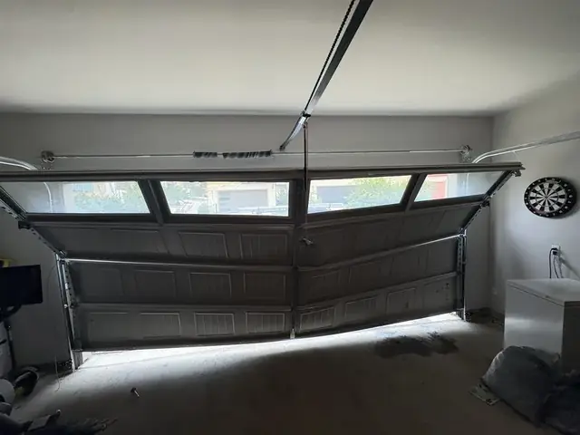
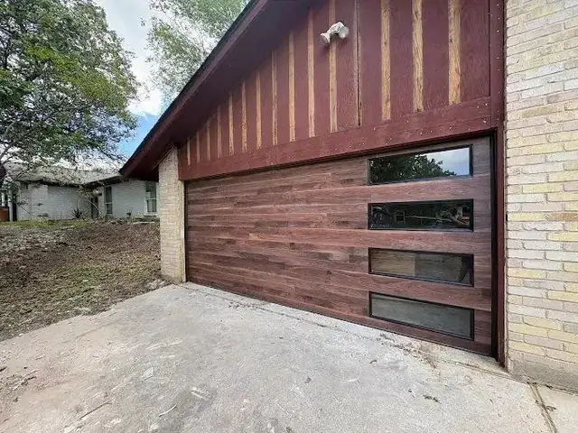
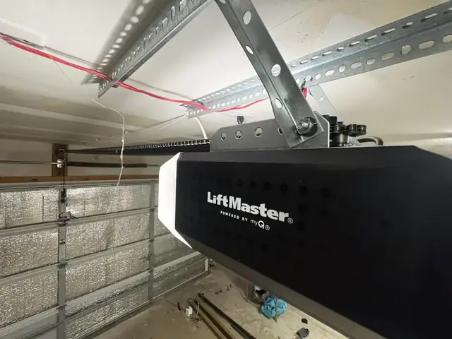
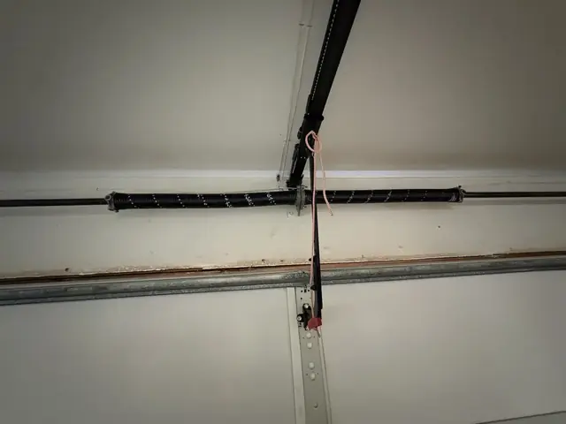
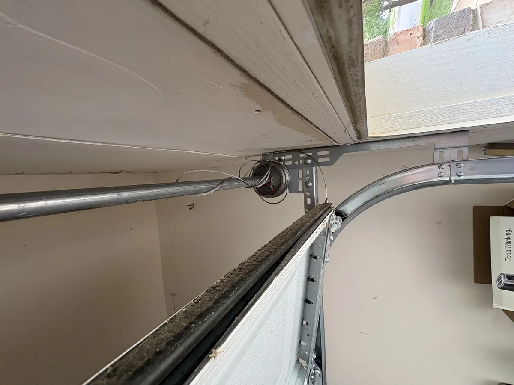
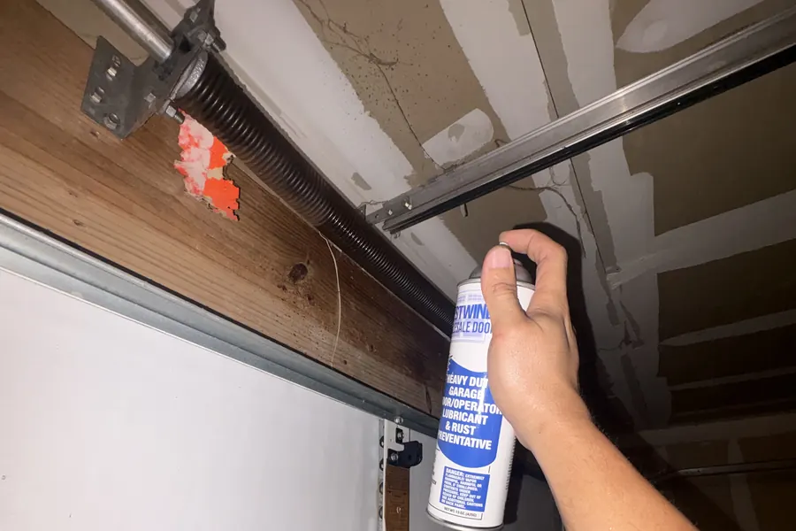
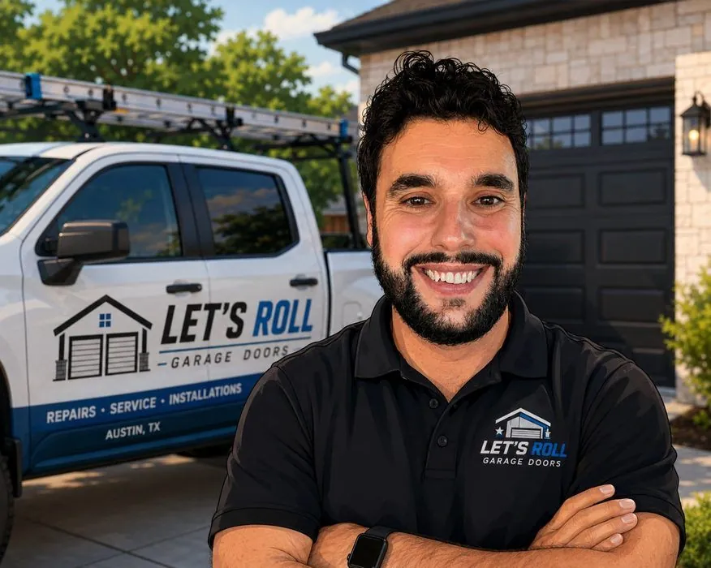

Garage Door Repair
Swift, reliable repair for any malfunction, noisy rollers, off-track panels, bent sections, damaged hardware, and more.
Get Free QuoteFast repairs, expert installations & 24/7 emergency service for homes and businesses across greater Austin. We roll fast, so you're never stuck.
We respond within 1 hour during business hours.
From emergency repairs to full door replacements, we handle every make, model, and brand with expert care.

Swift, reliable repair for any malfunction, noisy rollers, off-track panels, bent sections, damaged hardware, and more.
Get Free Quote
Upgrade your home's curb appeal with a professionally installed door. Wide selection of styles, materials, and colors available.
Get Free Quote
We service all major opener brands, LiftMaster, Chamberlain, Genie, Craftsman. Belt, chain, and screw drives.
Get Free Quote
Broken torsion or extension springs are a safety risk. Our techs replace them safely using quality parts backed by warranty. Learn more about our garage door spring repair in Austin.
Get Free Quote
Frayed or snapped cables cause dangerous imbalance. We restore proper tension and safe, smooth operation quickly.
Get Free Quote
Prevent costly breakdowns with a full inspection, lubrication, balance check, and safety test. Keeps your door lasting longer. Need quieter operation? See our roller replacement service.
Get Free Quote
Let's Roll Garage Doors is built on honesty, speed, and quality. We treat every job, big or small, with full professionalism and a commitment to getting it right the first time.
Every technician is trained, vetted, and fully insured, so you can open your door with confidence.
We prioritize your time. Same-day service for most repairs, and 24/7 emergency response whenever you need us.
We use manufacturer-approved parts and stand behind every repair and installation with a satisfaction guarantee. See our warranty terms.
A broken door doesn't keep business hours. Our Austin techs are on call around the clock, including weekends and holidays, for any garage door emergency.
Dudu was so fast and efficient in the installation of my garage opener. He has also been a great help whenever I have an questions or issues regarding my garage maintenance or upkeep.
David was the tech that came out to fix our garage door at our new rental home. He was very personable, and did a fantastic job getting things done quickly and communicating during each step. Happy to have a quiet working garage door.
David is honest and fair! I was quoted an outrageous amount for things I did not need when I went to a big garage door company. David will give it to you straight and fix the issue without incurring unnecessary costs. Highly recommend!
I highly recommend David! When my garage door was stuck on a Sunday, he responded and came out to help me super quickly. He was very friendly and got my broken door working even better than before. I will be calling him again!
Had an amazing experience. He took his time to walk me through the issues, proposed solution.
David is incredibly knowledgeable, prompt, and responsive. He was a life saver for us with both a repair recently and even came by after a power outage to help us get "back on track" - literally! Highly recommend!
David was very kind, educated, and patient! Fixed the problem right away. Zero complaints!
He was super kind and friendly, my garage has been needing repairs and everyone else was a bit costly. He brought everything needed and fixed everything professionally. Very easy to work with and fast — I wish I could give more than 5 stars.
They fixed my garage door same day same visit! Couldn't be happier with the service. Very professional and friendly!
David was awesome, very informative and reasonably priced too! I highly recommend if you have any issues with your garage door.
David from Let's Roll garage doors, did great! David fixed the issue, was timely, a good communicator, and went the extra mile making sure to answer all my questions and offered suggestions that will help me with additional utilization of the garage door moving forward. Thank you 😊
David was awesome. He was very good about communicating the entire process and did a very professional installation. Could not be happier! Great value vs places like cedar park overhead doors who was 40% more and they didn't offer a door that matched my existing garage. I know who I'll call if I need a garage door in the future.
I couldn't have asked for a better experience with Let's Roll Garage Doors. Their pricing was great, and the communication throughout the entire process was outstanding. The installers showed up on time, were friendly and professional, and did an excellent job. They were respectful of my property and cleaned everything up when they were finished. From the initial quote to the completed installation, everything went smoothly. I would definitely recommend Let's Roll Garage Doors to anyone needing garage door work. 5 stars!
I've used David from Let's Roll Garage Doors twice now for my garage motor replacement. He was quick in responding and quick in replacing the motor with the latest Liftmaster model. He was patient in describing all the features as well. I won't hesitate to call him for any additional repairs should I need them. Great service all around.
Truly exceptional experience with David! We called him at 1:30p on a Saturday and he was here by 2p. It's 3:40p and I have a functional garage door! Very reasonably priced. I would gladly call him again if I ever have another garage door issue.
Have a question we didn't answer? Call or text us anytime.
Call (512) 947-4451Proudly serving homeowners and businesses across the Austin metro area and beyond.
720 Airport Blvd #1280, Austin, TX 78702 · Open 24 hours · (512) 947-4451
Don't let a broken door slow you down. Call now or request a free estimate, we'll have it sorted fast.